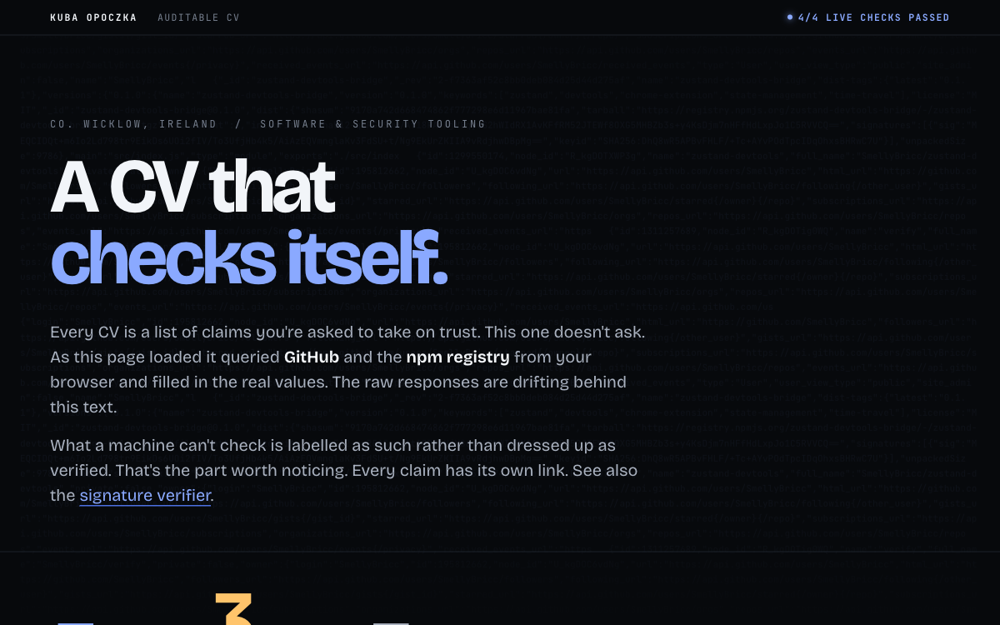
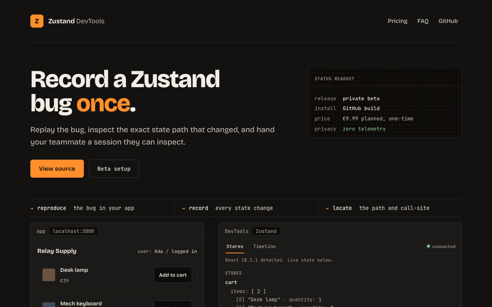
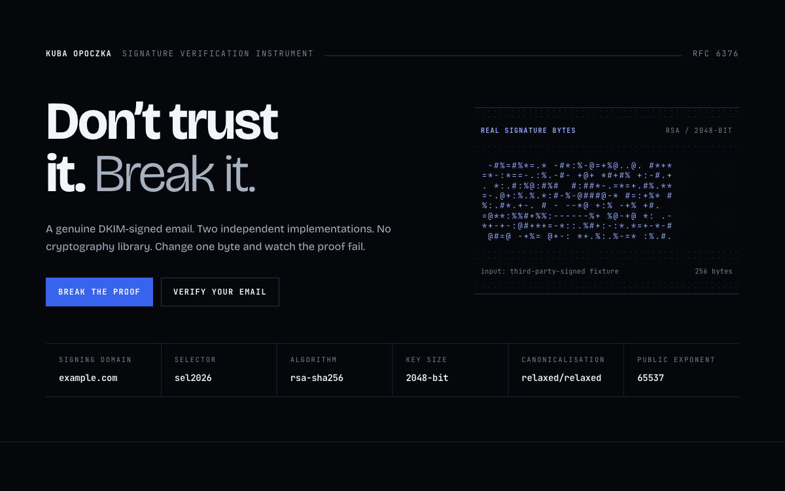
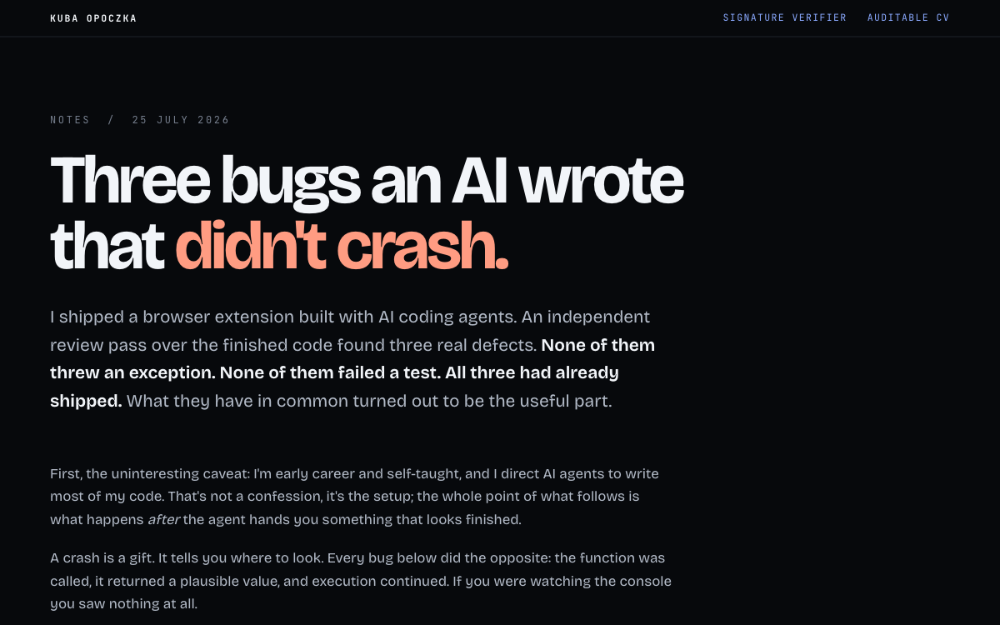

Specify
Turn a fuzzy goal into constraints, failure conditions and a definition of done.
Working software, adversarial tests and public evidence from an early-career builder who directs AI without trusting it blindly.

A working product, a cryptographic verifier and a review of the bugs that survived happy-path testing.

A Chrome DevTools extension for state inspection, path-level diffs, time travel and shareable trace sessions.

A real DKIM signature, two implementations and no cryptography library.

The failures that looked successful, and the review methods that exposed them.
Turn a fuzzy goal into constraints, failure conditions and a definition of done.
Give AI bounded work, the right context and acceptance criteria it cannot negotiate away.
Test seams, negative cases and assumptions owned by browsers, frameworks and external APIs.
Release only what I can explain, reproduce and support when the happy path disappears.
Not a senior developer. An early-career software builder who gets unusual leverage from AI and treats verification as part of the job.
Dublin-based and open to software engineering roles where AI leverage and verification both matter.